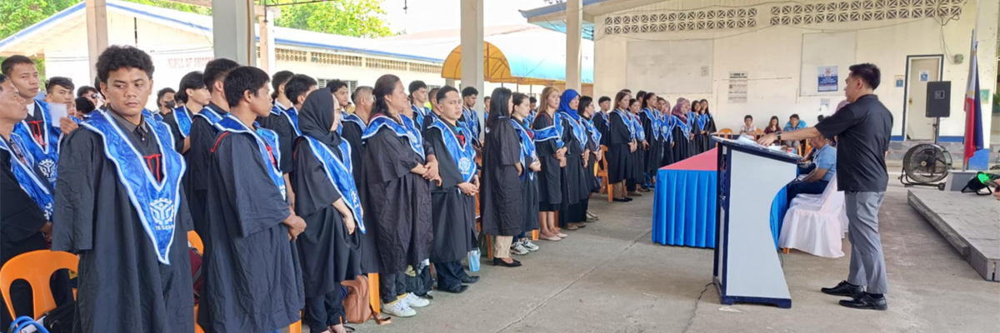

.png)
Program Description
With Training Regulation (WTR) Programs
Agricultural Crops Production NC II
✦ The AGRICULTURAL CROPS PRODUCTION NC II Qualification consists of
competencies that a person must achieve to produce various agricultural crops which
include performing nursery operations, planting, caring and maintaining of crops and
carrying-out harvest and postharvest operations.
✦ OCCUPATION:
✔ Farmer Grower
✔ Farmer Worker
✔ Nursery Operator
✔ Farm Aide
✔ Farm Caretaker
Automotive Servicing NC I
✦ The AUTOMOTIVE SERVICING NC I Qualification consist of competencies that
a person must achieve to perform pre-delivery inspection and periodic maintenance
of automotive parts and components.
✦ OCCUPATION:
✔ Pre-delivery inspector / Check lister
✔ Periodic maintenance personnel/staff
✔ Periodic maintenance associate
✔ Junior technician
✔ Maintenance technician
✔ Auto – service personnel
Automotive Servicing (Electrical Repair) NC II
✦ The AUTOMOTIVE SERVICING (ELECTRICAL REPAIR) NC II Qualification
consists of competencies that a person must achieve to service manual airconditioner system,
diagnose and repair manual air- conditioner system, repair manual
air-conditioner compressor magnetic clutch, diagnose and repair ignition system,
diagnose and repair starting system, diagnose and repair charging system and
diagnose and repair body electrical system.
✦ OCCUPATION:
✔ Electrical Technician (Automotive)
✔ Aircon Technician (Automotive)
Bread and Pastry Production NC II
✦ The BREAD AND PASTRY PRODUCTION NC II Qualification consists of
competencies that person must achieve to be able to clean equipment , tools and
utensils and prepare, portion and plate pastries, breads and other dessert items
to guests in hotels, motels, restaurants, clubs, canteens, resorts and luxury
lines/cruises and other related operations.
✦ OCCUPATION:
✔ Commis - Pastry
✔ Baker
Computer System Servicing NC II
✦ The COMPUTER SYSTEMS SERVICING NC II Qualification consists of competencies
that must possess to enable to install and configure computers systems, set-up computer
networks and servers and to maintain and repair computer systems and networks.
✦ OCCUPATION:
✔ Computer Assembler
✔ Computer Service Technician
✔ Network Technician
✔ Computer Maintenance Technician
Cookery NC II
✦ The COOKERY NC II Qualification consists of competencies that a person
must achieve to clean kitchen areas, prepare hot, cold meals and desserts for guests
in various food and beverage service facilities.
✦ OCCUPATION:
✔ Cook or Commis
✔ Assistant Cook
Dressmaking NC II
✦ The DRESSMAKING NC II Qualification consists of competencies that a
person must achieve to enable him/her to draft and cut pattern; lay-out pattern on
the material/fabric, sew material/fabric and apply finishing touches on the ladies
casual apparel of the Garment sector. Casual Apparel consists of casual dress,
blouse, skirt, trouser, shorts and culottes.
✦ OCCUPATION:
✔ Dressmaker
✔ Garment Sewer
Driving NC II
✦ The DRIVING NC II Qualification consists of competencies that a person must
achieve to operate light motor vehicles classified under LTO Restriction code 1 and 2;
transport passengers and loads over specified routes to local or district location and
collect fare duly authorized by the relevant government agency; comply with local
traffic rules and regulations and perform minor vehicle repairs and other minor
servicing.
✦ OCCUPATION:
✔ Professional Driver
✔ Light Vehicle Drive
Electrical Installationa and Maintenance NC II
✦ The Electrical Installation and Maintenance NC II Qualification consists of
competencies that a person must achieve to enable him/her to install and maintain
electrical wiring, lighting and related equipment and systems where the voltage does
not exceed 600 volts in residential houses/buildings.
✦ OCCUPATION:
✔ Building-Wiring Electrician
✔ Residential/Commercial-Wiring Electrician
✔ Maintenance Electrician
Electrical Installationa and Maintenance NC III
✦ The Electrical Installation & Maintenance NC III qualification consists of a
set of
competencies that a candidate for this qualification must achieve in order to obtain a
national certificate for this qualification as specified by TESDA requirements. This
particular set of competencies excludes core technical competencies required for related
highly specialized vocational skilled workers such as linemen, substation technicians,
electrical motors/generators repair technicians, etc.
✦ OCCUPATION:
✔ Industrial Electrician
✔ Electrical Leadman, or
✔ Electrical Foreman
Electronic Products Assembly and Servicing NC II
✦ The ELECTRONIC PRODUCTS ASSEMBLY AND SERVICING NC II Qualification
consists of competencies that a person must possess to assemble electronic products,
prepare printed circuit boards (PCB) modules and to install and service consumer and
industrial electronic products and systems.
✦ OCCUPATION:
✔ Electronic Products Assembler
✔ Domestic Appliance Service Technician
✔ Audio-Video Service Technician
✔ Industrial Electronic Technician
✔ Electronic Production Line Assembler
✔ Factory Production Worker
Food and Beverage Service NC II
✦ The FOOD AND BEVERAGE SERVICES NC II Qualification consists of
competencies that a person must achieve to provide food and beverage service to guests
in various food and beverage service facilities.
✦ OCCUPATION:
✔ Waiter
✔ Food and Beverage Service Attendance
Masonry NC I
✦ The MASONRY NC I qualification consists of competencies that a person must
achieve
that will enable him/her to prepare masonry materials, tools and equipment and perform basic
masonry works.
✦ OCCUPATION:
✔ Helper Mason
✔ Construction Helper
Organic Agriculture Production NC II
✦ The ORGANIC AGRICULTURE PRODUCTION NC II Qualification consists of
competencies that a person must achieve to produce organic farm products such as
chicken and vegetables including producing of organic supplements such as fertilizer,
concoctions and extracts. It has two (2) elective competencies which are on raising
organic hogs and raising organic small ruminants.
✦ OCCUPATION:
✔ Organic Agriculture Farmer
✔ Organic Chicken Raiser
✔ Organic Hog Raiser
✔ Organic Small Ruminants Raiser
✔ Organic Concoctions and Extracts Producer
✔ Organic Fertilizer Producer
Motorcycle/Small Engine Servicing NC II
✦ The MOTORCYCLE/SMALL ENGINE SERVICING NC II Qualification consists of
competencies that a person must achieve to install and service parts of motorcycle/small engine
and to perform periodic maintenance. Servicing includes inspecting, diagnosing, cleaning and
overhauling of mechanical and electrical parts, components, assemblies and sub-assemblies of the
unit.
✦ OCCUPATION:
✔ Motorcycle/Small Engine Mechanic
✔ Small Engine Mechanic
Plumbing NC I
✦ The PLUMBING NC I Qualification consists of competencies that a person must
achieve in installing a single plumbing unit which includes one unit each of water meter,
water closet, lavatory, shower with single point water heater and kitchen sink. It also
includes installing floor drains and faucets.
✦ OCCUPATION:
✔ Plumber I
Plumbing NC II
✦ The PLUMBING NC II Qualification consists of competencies that a person must
achieve in installing multiple units of plumbing system with multi-point hot- and cold-water
lines for medium-rise buildings. It also includes plumbing repair and maintenance work.
✦ OCCUPATION:
✔ Plumber II
Shielded Metal Arc Welding (SMAW) NC I
✦ The Welding NC I (SMAW) Qualification consists of competencies that a
person must achieve to weld carbon steel plates components as specified by layout,
blueprints, diagrams, work order, welding procedure or oral instructions using SMAW
welding equipment.
✦ OCCUPATION:
✔ Plate Welder (SMAW)
Shielded Metal Arc Welding (SMAW) NC II
✦ The Shielded Metal Arc Welding (SMAW) NC II Qualification consists of
competencies that a person must achieve to weld carbon steel plate and pipe
components as specified by layout, blueprints, diagrams, work order, welding
procedure or oral instructions using shielded metal arc welding equipment.
This Qualification conforms with American Welding Society (AWS) D 1.1
Structural Welding Code; American Society of Mechanical Engineers (ASME) IX
Boiler and Pressure Vessel Code; American Petroleum Institute (API) 1104 Code for
Gas and Oil Pipeline Facilities; and International Standards Organization (ISO) 9606-
1 Qualification of Welders for Steel.
✦ OCCUPATION:
✔ SMAW Welder
Shielded Metal Arc Welding (SMAW) NC II
✦ The Welding NC III (SMAW) Qualification consists of competencies that a
person must achieve to weld alloy steel plates components as specified by layout,
blueprints, diagrams, work order, welding procedure or oral instructions using SMAW
welding equipment.
This Qualification conforms with AWS D 1.1 Structural Welding Code; ASME
IX Boiler and Pressure Vessel Code; API 1104 Code for Gas and Oil Pipeline
Facilities; and ISO 9606-1 Qualification of Welders for Steel.
✦ OCCUPATION:
✔ Plate Welder (SMAW)
✔ Pipe Welder (SMAW)
✔ Plate Welder (SMAW-Alloy Steel)
RAC Servicing (DOMRAC) NC II
✦ The RAC SERVICING (DomRAC) NC II Qualification consists of
competencies that a person must achieve to enable him/her to install, service,
maintain, troubleshoot and repair domestic air-conditioning and refrigeration units.
✦ OCCUPATION:
✔ Domestic Refrigeration and Air-conditioning Technician
Trainers Methodology (TM) Level I
✦ The TRAINERS METHODOLOGY LEVEL I consists of competencies a TVET trainer
performing functions of trainer and assessor must achieve. A TVET trainer is a person who
enables a learner or a group of learners to develop competencies to performing a particular trade
or technical work.
✦ OCCUPATION:
✔ TVET Trainer/Technical Trainer
✔ Training Facilitator/Coordinator
✔ Competency Assessor